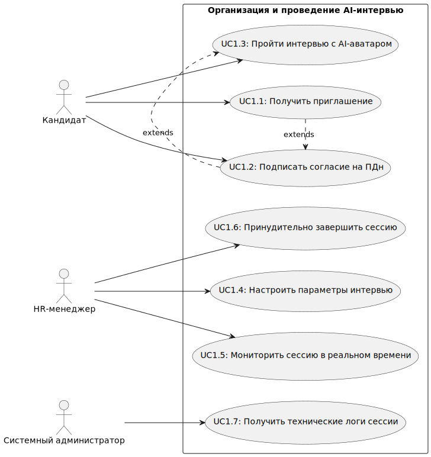
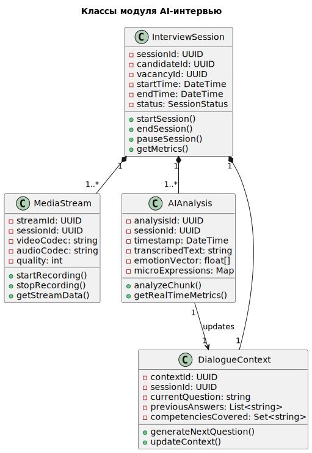
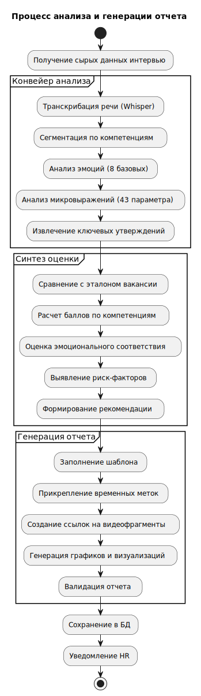
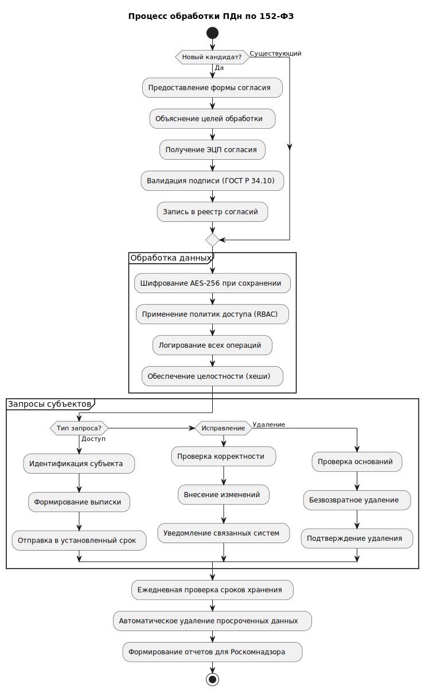
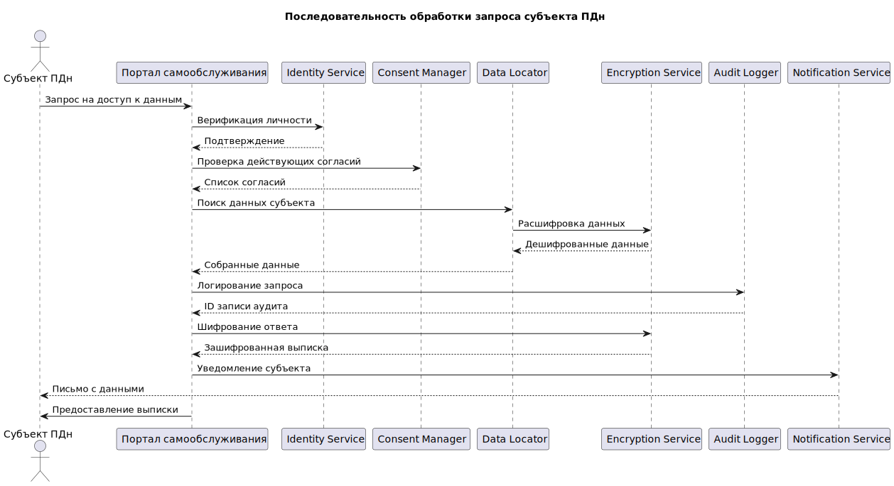
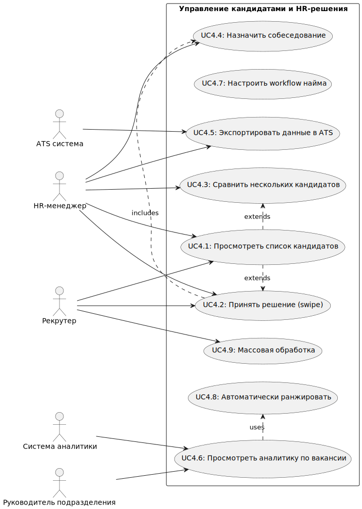
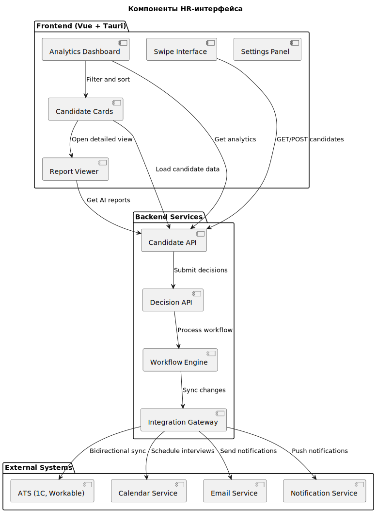

Техническое задание на разработку
1. Введение
1.1 Общая информация
Документ описывает требования к созданию Автоматизированной системы первичного HR-скрининга на базе AI-интервьюера (AI Interviewer MVP). Целью разработки является создание системы, которая с использованием искусственного интеллекта будет проводить первичный HR-скрининг кандидатов, сокращая время обработки с 2-3 часов до 15-20 минут при соблюдении всех нормативных требований.
1.2 Цели и задачи разработки
Цель разработки:
- Создать систему для первичного HR-скрининга, которая использует AI-интервьюера для ускорения процесса отбора кандидатов и сокращения нагрузки на HR-специалистов.
Задачи разработки:
- Автоматизация первичного скрининга кандидатов.
- Обработка и анализ данных (речь, эмоции, видеопоток) в реальном времени.
- Соблюдение требований безопасности и конфиденциальности данных.
- Интеграция с ATS-системами (например, 1C, Workable).
1.3 Термины и определения
- AI-интервьюер: Программный продукт для проведения интервью с кандидатами, использующий ИИ для анализа речи, эмоций и видеопотока.
- ATS: Система автоматизированного подбора персонала.
2. Обзор системы
2.1 Описание системы
Система предназначена для автоматизации первичного HR-скрининга. Она включает несколько модулей, среди которых AI-интервьюер, модуль обработки согласий на ПДн, и интерфейс для HR-специалистов. Основные этапы работы системы включают: проведение интервью, анализ ответов кандидата, создание отчетов, и отправка уведомлений HR-менеджеру.
2.2 Область применения
Система предназначена для использования в:
- HR-отделах крупных компаний, включая IT-компании, федеральные сети retail, производственные компании.
- Рекрутинговых агентствах.
- Кадровых центрах с массовым набором персонала (50+ вакансий/месяц).
3. Требования к системе
3.1 Функциональные требования
3.1.1 Модуль 1: Авторизация и согласие
- Описание: Система должна поддерживать автоматическую обработку цифровых согласий кандидатов на обработку их персональных данных (ПДн). Согласие должно быть подписано цифровой подписью (ГОСТ Р 34.10-2012).
3.1.2 Модуль 2: AI Interviewer
- Описание:
- Обработка видеопотока в реальном времени (Unity → WebAssembly).
- Распознавание речи с использованием модели Whisper (MIT, точность 95%+).
- Анализ эмоций с использованием pyAudioAnalysis (8 базовых эмоций, точность 82%), EmotiEffLib (43 параметра микровыражений).
- Генерация адаптивных вопросов с использованием ollama и qwen3 (контекстная память 8000 токенов, 15+ компетенций).
- Создание структурированных отчетов, включающих оценку по компетенциям (1-10), эмоциональный профиль, ключевые моменты интервью, и рекомендации.
3.1.3 Модуль 3: HR-интерфейс
- Описание: Интерфейс для HR-менеджеров, позволяющий легко принимать решения о кандидатах с использованием swipe-интерфейса (Vue + Tauri).
3.2 Требования к интерфейсу
- Web-интерфейс для кандидатов и HR.
- 3D-аватар интервьюера с использованием Unity WebAssembly.
- RESTful API для интеграции с ATS-системами (например, 1C, Workable, Greenhouse).
3.3 Требования к производительности
- Система должна поддерживать до 100 одновременных интервью.
- Время генерации отчета для каждого кандидата не должно превышать 5 минут.
- Ожидаемый uptime системы — 99.5% (цель — 99.9%).
- Масштабируемость: горизонтальная масштабируемость системы для обработки большого числа запросов.
3.4 Требования к надежности
- Система должна поддерживать ACID-транзакции для обеспечения целостности данных (PostgreSQL).
- Журналирование операций с ПДн: все действия с персональными данными должны быть записаны для возможной аудита.
3.5 Требования к безопасности и соответствию
- Шифрование данных: AES-256 для хранения данных в покое и TLS 1.3 для защиты передаваемых данных.
- Полное соответствие Федеральному закону 152-ФЗ "О персональных данных".
3.6 Технологический стек
- Язык программирования: Python.
- Микросервисы: Apache Kafka.
- База данных: PostgreSQL.
- ИИ-модели: Whisper, pyAudioAnalysis, EmotiEffLib, ollama/qwen3.
- Видеообработка: Unity → WebAssembly.
- Web-интерфейс: Vue + Tauri.
4. Процесс разработки
4.1 Этапы разработки
- Анализ и проектирование: 2 недели.
- Разработка модулей: 6 недель.
- Интеграция и тестирование: 3 недели.
- Развертывание и пилот: 2 недели.
4.2 Архитектура
- Микросервисная архитектура на основе Apache Kafka для обработки данных в реальном времени.
- PostgreSQL для хранения данных.
- Распределенная обработка видео для обеспечения параллельной обработки видеопотока.
5. Контроль и приемка
5.1 Контроль разработки
- Проведение еженедельных демо-сессий для анализа текущего состояния разработки.
- Тестирование компонентов на всех этапах разработки, включая unit, интеграционное и нагрузочное тестирование с использованием Locust.
5.2 Критерии приемки
- Точность оценки кандидатов должна быть ≥85%.
- Время обработки кандидата (time-to-hire) должно быть ≤15 дней.
- Система должна экономить 70% времени HR.
- Стоимость найма должна снизиться на 40%.
5.3 Документация
- Руководство пользователя.
- Административная панель для управления и мониторинга работы системы.
6. Заключение
Техническое задание описывает все ключевые функциональные и нефункциональные требования к системе. Система будет соответствовать современным стандартам безопасности, производительности и масштабируемости, обеспечивая автоматизацию процессов HR-скрининга и соблюдение всех нормативных требований.
Уровень 1: Context Diagram (Контекстная диаграмма)

Уровень 2: Container Diagram (Контейнерная диаграмма)

Уровень 3: Component Diagram - Interview Service (Декомпозиция ключевого сервиса)

Уровень 4: Component Diagram - AI Processing Service

Уровень 5: Component Diagram - HR Dashboard (Frontend)

Организация и проведение AI-интервью


Анализ результатов интерьвью и генерация отчета


Обеспечение защиты данных


Управление кандидатами и принятие решения


Процесс проведения Ai интерьвью

Процесс формирования отчета по кандидату

Процесс рассмотрения кандидата HR-менеджером

Процесс интеграции с внешними системами

Проведение Ai интерьвью

Анализ и генерация отчета

Соответствие 152-ФЗ

Управление кандидатами

UML
- Организация и проведение AI-интервью
- Анализ результатов и генерация отчета
- Защита персональных данных
- Управление кандидатами и HR-решения
Организация и проведение AI-интервью
1.1 Use Case Diagram

1.2 Activity Diagram

1.3 Sequence Diagram

1.4 Class Diagram (структура данных сессии)

1.5 Component Diagram (архитектура компонентов)

1.6 State Diagram (жизненный цикл сессии)

Анализ результатов и генерация отчета
2.1 Use Case Diagram

2.2 Activity Diagram

2.3 Sequence Diagram

2.4 Class Diagram (модель данных отчета)

2.5 Deployment Diagram (развертывание сервисов)

2.6 Timing Diagram (временные характеристики)

Обеспечение соответствия 152-ФЗ
3.1 Use Case Diagram

3.2 Activity Diagram

3.3 Sequence Diagram

3.4 Class Diagram (модель безопасности)

3.5 Package Diagram (структура модулей безопасности)

3.6 Communication Diagram

Управление кандидатами и HR-решения
4.1 Use Case Diagram

4.2 Activity Diagram

4.3 Sequence Diagram

4.4 Class Diagram (модель workflow)

4.5 Component Diagram (архитектура HR-интерфейса)

4.6 Object Diagram (состояние системы)

Полный процесс проведения AI-интервью

Процесс анализа результатов и генерации отчета

Процесс обеспечения соответствия 152-ФЗ

Процесс управления кандидатами и HR-решений

Компонентная схема

Архитектурные Решения (ADR) для Системы Первичного HR-Скрининга
ADR-001: Выбор архитектурного стиля — Микросервисы с Event-Driven на Apache Kafka
Решение: Принята микросервисная архитектура с шиной событий Apache Kafka. Компоненты системы разделены на функциональные модули, взаимодействующие через асинхронные сообщения.
Обоснование:
-
Обработка видеопотока в реальном времени: Модуль AI-интервьюера должен обрабатывать медиаданные с задержкой менее 2 секунд. Выделенный микросервис для медиа (WebRTC SFU) может масштабироваться горизонтально независимо от других компонентов.
-
Генерация адаптивных вопросов: Модуль вопросов, основанный на ollama + qwen3, требует значительных вычислительных ресурсов (GPU). Микросервисная архитектура позволяет развертывать его на отдельном GPU-кластере и масштабировать по количеству активных сессий.
-
Надежность и журналирование операций с ПДн: Модуль безопасности и соответствия 152-ФЗ должен гарантированно фиксировать все события, связанные с персональными данными. Event-driven подход с Kafka обеспечивает гарантированную доставку и сохранение этих событий для последующего аудита.
-
Горизонтальная масштабируемость: Требование поддерживать до 100 одновременных сессий делает монолитную архитектуру неэффективной. Микросервисы позволяют добавлять инстансы только тех компонентов, которые испытывают нагрузку (например, модули анализа эмоций pyAudioAnalysis и EmotiEffLib).
-
Процесс работы из технического задания: Шаги системы (получение согласия → проведение интервью → анализ → генерация отчета → решение HR) естественным образом ложатся на цепочку взаимодействующих сервисов. Kafka выступает в роли клея, передавая данные о завершении одного этапа для начала следующего.
ADR-002: Выбор моделей и технологий искусственного интеллекта
Решение: Применен гибридный стек AI-технологий с локальным развертыванием:
- Распознавание речи: Whisper (MIT license).
- Анализ эмоций: pyAudioAnalysis (8 базовых эмоций) в связке с EmotiEffLib (43 параметра микровыражений).
- Генерация адаптивных вопросов: Модель qwen3, развернутая через фреймворк ollama.
Обоснование:
-
Для модуля распознавания речи (Whisper):
- Точность и поддержка языков: Показатель точности >95% на русском языке соответствует заявленным требованиям. Поддержка множества языков позволяет работать с международными кандидатами.
- Лицензия и локализация: MIT-лицензия разрешает коммерческое использование. Модель может быть развернута на собственном GPU-оборудовании внутри периметра инфраструктуры заказчика, что является обязательным условием для обработки персональных данных (видео/аудио интервью) по 152-ФЗ.
- Производительность: Оптимизирована для трансформаторной архитектуры, что позволяет достичь требуемой скорости обработки потока.
-
Для модуля анализа эмоций (pyAudioAnalysis + EmotiEffLib):
- Комплексный анализ: Комбинация библиотек закрывает все требования: pyAudioAnalysis дает общую оценку по базовым эмоциям (радость, грусть, злость и т.д.) с точностью 82%, а EmotiEffLib предоставляет детализированный анализ микровыражений (коротких, непроизвольных движений лица), что является сильным индикатором искренности.
- Научная обоснованность: EmotiEffLib основана на системе кодирования лицевых движений (FACS), что повышает доверие к результатам анализа со стороны HR-специалистов.
- Открытый исходный код: Возможность доработки и адаптации моделей под специфические корпоративные сценарии.
-
Для модуля генерации вопросов (ollama + qwen3):
- Контекстная память 8000 токенов: Модель qwen3 поддерживает достаточно длинный контекст, чтобы "помнить" все предыдущие ответы кандидата в рамках 20-минутного интервью и строить уточняющие вопросы.
- Оценка 15+ компетенций: LLM-модель способна анализировать текстовую транскрипцию ответа на предмет проявления конкретных компетенций (лидерство, работа в команде, аналитическое мышление) и генерировать следующий вопрос для более глубокой проверки.
- Контроль и безопасность: Локальное развертывание через ollama исключает утечку вопросов и ответов к сторонним провайдерам, обеспечивая полный контроль над данными. Это критически важно, так как в ответах могут раскрываться коммерческие тайны или иная чувствительная информация.
ADR-003: Выбор стратегии хранения данных
Решение: Применена полиглотная архитектура хранения, где каждый тип данных обслуживается оптимальной для него системой:
- PostgreSQL — для структурированных транзакционных данных.
- MinIO (S3-совместимое хранилище) — для больших бинарных объектов (видео).
- Redis — для кэширования и хранения состояний в реальном времени.
- Elasticsearch — для индексации, поиска и анализа логов.
Обоснование для каждого хранилища:
-
Для структурированных данных (PostgreSQL):
- ACID-транзакции и надежность: Обработка цифровых согласий на ПДн с электронной подписью (ГОСТ Р 34.10-2012) является юридически значимой операцией. Требуется гарантированная запись, целостность и консистентность данных, что обеспечивает PostgreSQL.
- Сложные запросы и связи: HR-интерфейсу необходимы сложные выборки, джойны и агрегации для фильтрации кандидатов, построения отчетов по вакансиям. Реляционная модель PostgreSQL идеально подходит для этого.
- Поддержка JSONB: Позволяет гибко хранить структурированные отчеты AI (оценки по компетенциям, эмоциональные профили) внутри реляционных таблиц, сочетая строгость схемы с гибкостью NoSQL.
-
Для видеоданных (MinIO):
- Объем и характер данных: Одна сессия интервью (20 минут, 1080p) занимает ~2 ГБ. При 100 сессиях в день объем хранения растет на 200 ГБ/день. Объектное хранилище эффективно и экономично для таких объемов.
- Надежность и доступность: MinIO обеспечивает отказоустойчивость через erasure coding, географическую репликацию для Disaster Recovery, что критично для сохранности персональных данных.
- Интеграция и шифрование: S3-совместимый API упрощает интеграцию. Поддерживает шифрование данных на стороне сервера (SSE), что является требованием для защиты ПДн по 152-ФЗ.
-
Для данных реального времени (Redis):
- Скорость доступа: Текущее состояние сессии (последний заданный вопрос, накопленный контекст для LLM, метрики качества связи) должно быть доступно с латенси менее 10 мс для обеспечения плавного диалога.
- Временные данные: Сессии интервью имеют ограниченный срок жизни (минуты/часы). Redis с TTL (time-to-live) идеально подходит для таких данных, автоматически очищая память.
- Механизм Pub/Sub: Используется для рассылки уведомлений HR-менеджерам о новых отчетах через WebSocket, что соответствует требованию swipe-интерфейса для быстрого принятия решений.
-
Для логов и поиска (Elasticsearch):
- Требования к журналированию: 152-ФЗ обязывает вести журнал всех операций с персональными данными. Elasticsearch позволяет индексировать миллионы логов и выполнять быстрый полнотекстовый и структурированный поиск для внутреннего аудита или запросов от регулятора.
- Аналитика и мониторинг: Kibana поверх Elasticsearch позволяет строить дашборды для мониторинга метрик производительности (uptime 99.5%, время генерации отчета) и бизнес-показателей (конверсия кандидатов).
ADR-004: Выбор брокера сообщений и механизмов межсервисного взаимодействия
Решение: Использована многоуровневая система коммуникаций:
- Apache Kafka — как основная шина событий (event bus) для потоковой обработки и гарантированной доставки.
- gRPC — для низколатентного RPC-взаимодействия между внутренними сервисами.
- REST/GraphQL — для публичного API и интеграций.
- WebRTC — для передачи медиапотоков от клиента.
- WebSocket — для push-уведомлений в HR-интерфейс.
Обоснование:
-
Для событийной шины (Apache Kafka):
- Обработка потока видеоданных: Kafka способен поглощать высокоскоростной поток сообщений (кадры видео, аудиосэмплы) от медиасервера и распределять их по потребителям — сервисам распознавания речи и анализа эмоций.
- Гарантированный порядок и доставка: События в рамках одной сессии интервью должны быть обработаны в строгом порядке. Гарантии доставки и порядок внутри партиции Kafka критичны для контекстной логики диалога.
- Журнал событий для аудита: Все значимые действия (подписание согласия, начало/конец интервью, доступ HR к отчету) публикуются в Kafka для последующего аудита.
-
Для внутренних RPC-вызовов (gRPC):
- Производительность и эффективность: Взаимодействие между сервисами требует минимальной задержки и высокой пропускной способности. Протокол gRPC значительно эффективнее текстового REST/JSON.
- Поддержка потоковой передачи: Позволяет передавать данные анализа от AI-сервисов к сервису отчетности в реальном времени.
-
Для внешних интеграций (REST/GraphQL):
- Интеграция с ATS: Эти системы ожидают взаимодействия по стандартным REST API. GraphQL предлагается для продвинутых клиентов, позволяя запрашивать именно те данные, которые нужны.
-
Для медиакоммуникаций (WebRTC):
- WebRTC является лучшим решением для передачи видео и аудио с камеры в браузере с минимальной задержкой.
-
Для уведомлений UI (WebSocket):
- Swipe-интерфейс для HR: Для мгновенного обновления списка кандидатов и уведомлений используется WebSocket.
Итоги
Представленный набор архитектурных решений формирует основу для системы, которая:
- Выполняет функциональные требования: Обеспечивает проведение AI-интервью с анализом речи, эмоций и генерацией адаптивных вопросов.
- Соответствует нефункциональным требованиям: Достигает производительности (100 одновременных сессий, отчет за <5 мин), надежности (99.5% uptime, ACID) и безопасности (152-ФЗ "из коробки").
- Обеспечивает масштабируемость и гибкость: Микросервисная архитектура с полиглотным хранением и event-driven взаимодействием позволяет системе расти и адаптироваться к новым требованиям.
Научная статья и акселератор
По данной теме была опубликована научная статья:

Ссылка на публикацию на платформе vc.ru
УМНЫЕ ВИРТУАЛЬНЫЕ ПЕРСОНАЖИ: КАК ИИ И МУЛЬТИМОДАЛЬНОСТЬ ПРЕОБРАЗУЮТ ВЗАИМОДЕЙСТВИЕ ЧЕЛОВЕКА И МАШИНЫ
Другие публикации
Также был проведен акселератор, где проект был представлен и оценен жюри. Вы можете ознакомиться с результатами по следующей ссылке.
Другие научные статьи, опубликованные в этом году:
-
Шонин Д.В., Джамалова К.В., Гаспарян Э.А., Зимин Г.Д.
Интеграция омниканальных технологий в электронный документооборот.
Вестник Вологодского государственного университета. Серия: Технические науки. 2025. № 4 (30). С. 39-42. -
Орлов В.О., Гаспарян Э.А., Шонин Д.В.
Автоматизированное распределение заявок по воронкам на основании входящих данных.
В сборнике: Проблемы управления в социально-экономических и технических системах. Материалы XXI Международной научно-практической конференции. В 2-х томах. Саратов, 2025. С. 397-400. -
Шонин Д.В., Гаспарян Э.А., Орлов В.О., Михеев А.С.
Сервисы для генерации документов и работы с документооборотом с применением искусственного интеллекта.
В сборнике: Проблемы управления в социально-экономических и технических системах. Материалы XXI Международной научно-практической конференции. В 2-х томах. Саратов, 2025. С. 471-474. -
Кулагин И.М., Гаспарян Э.А., Бутков А.А., Шонин Д.В.
Оптимизация процесса доставки изменений для мобильного приложения.
Вестник Вологодского государственного университета. Серия: Технические науки. 2025. № 3 (29). С. 45-47.